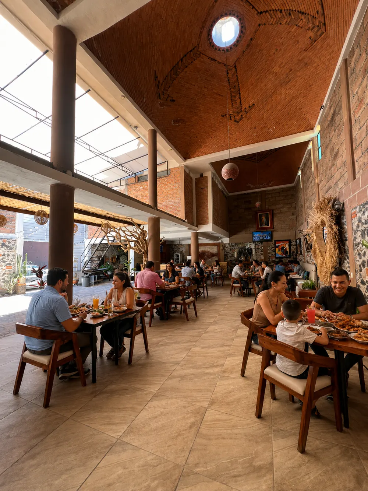
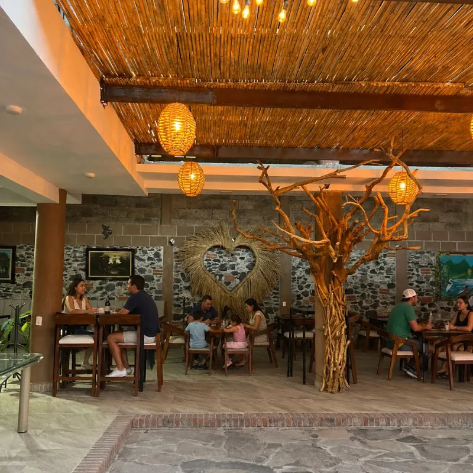
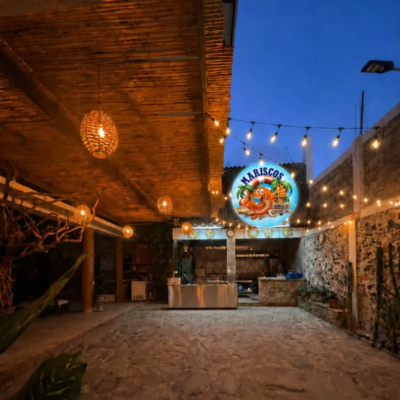

Nuestra Historia
Mariscos Muelle 27 nace del amor por el mar y las recetas que han pasado de generación en generación en nuestra familia. Más que un restaurante, somos un espacio donde el sabor, la calidad y la calidez se encuentran en cada detalle.
De la costa de Michoacán a Querétaro
Nuestro restaurante nace del amor por el mar y las recetas que han pasado de generación en generación en nuestra familia. El sazón que nos distingue tiene su origen en la cocina tradicional, donde los sabores frescos, el respeto por los ingredientes y el toque casero son la base de cada platillo.
La idea surgió del deseo de compartir con más personas esos momentos especiales alrededor de la mesa, donde los mariscos no sólo alimentan, sino que reúnen, celebran y crean recuerdos. Cada receta está inspirada en nuestras raíces, combinando tradición con un estilo único que hoy nos representa.
Más que un restaurante, somos un espacio donde el sabor, la calidad y la calidez se encuentran en cada detalle.
Qué significa "Muelle 27"
El número 27 es nuestro atraque: el muelle desde donde zarpamos cada mañana, metafóricamente hablando. Querétaro no tiene mar, pero lo traemos en cada platillo. El muelle es el punto de encuentro entre la costa y el desierto, entre la tradición familiar y quien cruza la puerta por primera vez.
Por qué "de la costa de Michoacán"
La costa michoacana tiene sazón propio: frescor cítrico, respeto por el pescado blanco, menos chile bravío que el norte, más equilibrio. Esa es la receta que nuestra familia trajo a Querétaro y que no cambiamos por nada.
No somos otra marisquería estilo Sinaloa — somos marisquería michoacana en pleno Bajío. Eso es lo que nos diferencia, y por eso cada plato tiene un balance distinto al que estás acostumbrado.
Cinco cosas que nos hacen diferentes
Recetas familiares
No manuales de franquicia. Cada cocinero de la casa sigue las recetas de nuestra familia al pie de la letra.
Producto fresco
Pesca con llegada frecuente, sin conservadores. Si el camarón no está en su punto, no sale de la cocina.
Terraza fresca del sur
La terraza más fresca del sur de Querétaro, con sombra natural y aire corrido.
Precios visibles
Sin sorpresas. Todos los platillos llevan precio en la carta. Conocer el costo antes de pedir es respeto al cliente.
Ambiente familiar
No bar disfrazado de restaurante. Mesas grandes, menú infantil, tiempos sin prisa.
Un vistazo dentro del muelle



Ven a conocernos
Más que un restaurante, somos un espacio donde el sabor, la calidad y la calidez se encuentran en cada detalle. Reserva por teléfono o WhatsApp.